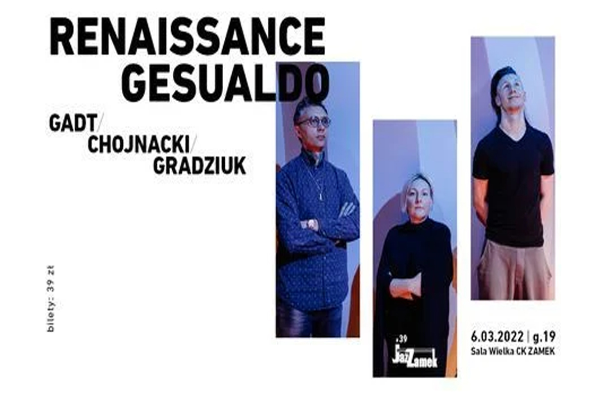

JazZamek # 39 - Renaissance Gesualdo Gadt / Chojnacki / Gradziuk
"Renaissance Gesualdo" is another program of the Gadt / Chojnacki / Gradziuk trio inspired by the music of the 16th century. The previous album Renaissance, released in 2017, brought the band many concerts, favor of the critics and the audience, and Annie Gadt a special distinction in the form of a nomination for the Fryderyk award in the Artist of the Year category.
"Renaissance Gesualdo" is a program inspired and directly related to the work of Carlo Gesualdo da Venosa, an Italian composer of the Renaissance era, an eccentric and controversial figure, whose work was referred to by, among others, Monteverdi and Jan Sebastian Bach. The story told by Gadt, Chojnacki and Gradziuk is freely inspired by Gesualdo's compositions. Above all, however, it is a well-thought-out and consistently conducted narrative, intended to introduce the listener to the world of the free Renaissance. The concept of music played by the trio involves the translation of the Renaissance past into the language of contemporary improvised and jazz music.
For improvising musicians, it becomes a challenge to reread strongly defined Renaissance compositions and to look at them through the prism of contemporary harmony and complete freedom of expression. Gesualdo's music performed by the trio is full of contrasts, intimidating with its delicacy, whispers and chords, and in a moment destroying the subtlety with a rough, piercing sound. This music is moving, stuffy, at times intimidating and intimidating, funny, tender, sensual and for many probably iconoclastic, repulsive and controversial.
Binder for diversity is the philosophy of music based on three pillars: courage / honesty / spontaneity.
Zbigniew Chojnacki - accordion / electronics
Krzysztof Gradziuk - drums and various instruments
Anna Gadt - voice
Register Now